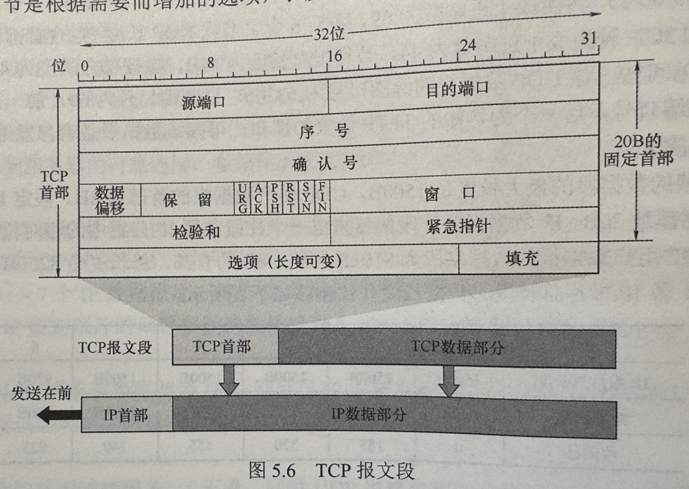

计算机网络
计算机网络
OSI
- 物理层
- 数据链路层
- 网络层（网际层）
- 传输层
- 会话层
- 表示层
- 应用层
TCP/IP
- 数据链路层
- 网络层（网际层）
- 传输层
- 应用层
毫无疑问，OSI是冗杂的，也是及其标准的，但我们总是要考虑实现起来是否方便。
而简化后，表示层功能融入应用层，会话层融入传输层。
什么层做什么事，下层向上层隐藏细节，提供接口服务。
物理层
数字编码方式
- 归零编码 RZ
- 开始时高电平1，低电平0
- 非归零编码 NRZ
- 反向归零编码 NRZI
- 开始时跳变代表0，不跳变1
- 曼彻斯特编码
- 中间向下跳变代表0，向上跳变代表1
- 差分曼彻斯特编码
- 开始时跳变代表0，不跳变代表1
波特率 Baud
单位时间传输的码元数
奈氏准则
无噪声信道极限传输速率=2W log 2V
香农定理
有噪声极限传输速率= W log2(1+ S/N)
信噪比
信噪比 = 10 * log10(S/N) 单位dB
物理介质
中继器
放大且重整形输入信号再输出，使其传播更远
集线器
相当于多端口的中继器，一个信号输入后放大且重整形输入信号再输出至所有其他端口。
数据链路层
基本任务：实现帧的传输
基本问题：封装成帧，透明传输，差错检测
封装成帧是指对数据添加首部和尾部构成帧，并且收发能识别帧首部尾部，在二进制比特流对帧定界等。
透明传输是指传输内容不会影响帧接收的误判等问题
路由器仅有下三层的协议栈
信道与所用协议
- 点对点信道
- ppp协议
- 广播信道
- 有线局域网CSMA/CD协议
- 无线局域网CSMA/CA协议
功能
流量控制：进行收发双方的速率协调，向发送方反馈信息，调整限制其速率
差错检测
位错
- 采用CRC等发现位错
帧错，分两种情况
丢失或重复等问题
在质量较差的信道，可能增加帧编号采用确认和重传机制，向上层提供可靠传输服务
在质量良好的信道，仅仅进行位错检测，丢弃错误帧，使接收到的都是正确的帧，出错的帧的重传任务由高层协议完成。
组帧
封装成帧
解决问题：帧定界，帧同步，透明传输等
- 字符填充法
- 帧首部使用计数字段记录帧所含字节数。
- 包容易出错的
- 字节填充法
- 使用特殊字节定界开始与结束，如SOH表示开始，EOT表示结束
- 内部数据出现特殊字符使用转义字符加以区分
- 零比特填充法
- HDLC协议使用
- 使用特定比特串01111110标志帧的开始与结束
- 发送方预处理，使数据所有连续的每五个1就在之后填充一个0
- 违规编码法
- 物理层进行比特编码时，常采用
- 如曼彻斯特编码将比特‘1‘编码成“高-低”电平对。而高高与低低是违规的，因此可借用违规编码序列定界帧的开始与结尾。
- 局域网IEEE802采用了
- 不采用任何填充技术实现透明传输，但只适用采用冗余编码的特殊环境
差错控制
利用编码技术进行差错检测，主要两类：自动重传请求（ARQ）和前向纠错（FEC）
检错编码
- 奇偶校验
- 加个冗余位，使得数据中1的个数为奇数或偶数
- 当奇数个位出错，可检错
- CRC
- 收发双方约定多项式，对应二进制数，如x2+1 -> 101
- 发送方基于多项式计算冗余码，并附加到数据后面
- 接收方通过多项式是否整除添加了冗余码的数据来判断是否产生差错

纠错编码
码距：两个相同对应字符间，不同的字符的数量
- 海明码
- 纠错d位，需要码距为2d+1的编码方案
- 检错d位，需要码距为d+1
流量控制与可靠传输
二者是交织在一起的
数据链路层讨论控制相邻结点之间的流量
流量控制是指接收方控制发送方的发送速率，使接收方有足够缓冲空间接收每个帧
接收方丢弃错误帧，丢弃重复帧。发送方对帧有计时器，超时重传。
停止-等待流量控制
- 内容：发送方每次只允许发送一个帧，接收方每次接收一个帧都要反馈一个应答信号，发送方在接收到反馈信号前要一直等待。
滑动窗口流量控制
- 发送方维护一组连续的允许发送帧的序号
- 接收方维护一组连续的允许接收帧的序号
- 序列编号的可用范围要大于等于发送窗口与接收窗口大小之和，也即要使用足够的比特数存序号

单帧滑动窗口与停止-等待协议（S-W）
- 信道利用率计算
- U=TD/(TD+Rtt+TA)
多帧滑动窗口与后退N帧协议（GBN）
- 信道利用率计算(n为窗口大小)
- U=nTD/(TD+Rtt+TA)
介质访问控制MAC（数据链路层的子层，决定广播信道的信道分配）
三种，信道划分访问控制（静态划分，并发），随机访问控制（动态控制），轮询访问控制（动态控制）
信道划分访问控制
频分复用FDM
时分复用TDM
波分复用WDM
码分复用CDM（码分多址CDMA）
- 即共享频率，又共享时间
- 每个比特时间被划分为m个更短的时间槽，称为码片（m位）
- 每个站点被指派唯一一个m位的码片序列，且不同站点的序列正交
- 发送1时，发送码片序列，发送0时发送反码
- 若用1和-1表示，例子
码分复用频谱利用率高，抗干扰能力强，保密性强，语音质量好等，还能减少投资及运行成本，主要用于无线通信系统，特别是移动通信系统
随机访问介质访问控制
ALOHA协议
CSMA协议
CSMA/CD协议！！
CSMA/CA协议！！
轮询访问：令牌传递协议
局域网
以太网（目前使用范围最广的有线局域网技术）：V2，IEEE802.3
无连接不可靠网络
IEEE802协议栈将数据链路层拆分为：LLC，MAC
- 传输介质
- MAC地址
- 48位
以太网V2标准MAC帧结构
14+1500+4，>=64
即6+6+2+（46~1500）+4：目的地址，源地址，类型，数据，FCS校验
额外前导码：8=7前同步+1帧开始定界符
高速以太网
无线局域网
802.11协议
路由器+AP
MAC帧，地址字段含义
VLAN
广域网
交换机与集线器
交换机是数据链路层设备，集线器是物理层设备
集线器不隔离广播域，也不隔离冲突域；交换机不隔离广播域，但隔离冲突域
网络层
冲突域与广播域
冲突域（被视为第一层的概念，所以一层之上的可划分冲突域）
- 是指连接到同一物理介质上的所有结点的集合，结点间存在介质争用现象（无脑转发的都是一个冲突域）
广播域（被视为第二层的概念，所以二层之上的可划分冲突域如路由器）
- 接收同样广播消息的结点集合
IPV4分组
首部字段解释
- 版本：四位，IPV4为4
- 首部长度：以4B为单位，常用20B=5*4B
- 总长度：首部与数据之和，单位为字节，因此数据报最大65535B，注意，很大会被拆分成多个数据报，因为以太网帧的大小没这么大
- 标识：计数器，分片时标识一样的是原本的一个数据报
- 标志：_ DF MF，三位，MF=1表示后面还有分片，DF=0才允许分片
- 片偏移：指出分片后，某片的数据开头在原数据的相对位置，以8B为单位，除最后一个分片，每个分片长度一定是8B的整数倍
- 生存时间TTL：路由转发时减一
- 协议：上层协议，6标识TCP，7表示UDP
- 首部检验和：检验首部
- 源IP
- 目的IP
分类的IPV4地址
- 主机号全为0表示本网络本身
- 主机号全为1表示本网络广播地址，又称直接广播地址
- 127.x.x.x保留为环回自检地址
- 全0表示本网络的本主机
- 全1表示整个TCP/IP网络的广播地址，又称受限广播地址
私有IP地址
A类：1个A类网段，即10.0.0.0~10.255.255.255。
B类：16个B类网段，即172.16.0.0~172.31.255.255。
C类：256个C类网段，即192.168.0.0~192.168.255.255。
NAT
私有地址到公有地址的转换
划分子网，CIDR地址划分与路由聚合
CIDR无类别域间路由（CIDR）
取代分类IP地址系统，解决IP地址分配和路由问题
- 主要特征：
- 可变长度子网掩码：CIDR允许使用任意长度的子网掩码，不再局限于分类地址中的固定掩码长度。这意味着网络可以根据实际需要分配IP地址，而不浪费资源。
- 路由聚合：CIDR支持路由聚合（Supernetting），可以将多个连续的网络聚合成一个更大的网络，简化路由表的管理。路由聚合是路由器管理路由表自动进行的，也可手动配置
- 表示方式：
- CIDR 使用斜杠记法（slash notation），表示IP地址和子网掩码。例如，192.168.1.0/24 表示IP地址 192.168.1.0，子网掩码是 255.255.255.0。
子网划分原则：不重叠！不遗漏！
可画ip地址父子关系二叉树来方便判断是否符合原则
ARP（地址解析）
RARP（反向地址解析）
DHCP（动态主机配置）
ICMP（网际控制报文）
ICMP是网络层协议，但是封装在ip数据报中，ip协议直接对其提供服务
IPV6
- 特点
- 更大的地址空间。这是最重要的。IPv6将地址从IPv4的32位增大到128位，IPv6 的地址空间是 IPv4的296倍，从长远来看，这些地址是绝对够用的。
- 扩展的地址层次结构。IPv6 因内地址空间很大，所以可以划分为更多的层次。
- 灵活的首部格式。IPv6定义了许多可选的扩展首部，不仅可提供比 IPv4 更多的功能，而且能提高路由器的处理效率，这是因为路由器对扩展首部不进行处理。
- 改进的选项。IPv6首部长度是固定的，其选项放在有效载荷中，选项是灵活可变的。而IPv4 所规定的选项是固定不变的，其选项放在首部的可变部分。
- 允许协议继续扩充。IPv6允许不断扩充功能，而IPv4 的功能是固定不变的。
- 支持即插即用（即自动配置）。因此IPv6不需要使用DHCP。
- 支持资源的预分配。IPv6 支持实时音/视频等要求保证一定带宽和时延的应用。
- IPv6 只有源主机才能分片，是端到端的，不允许类似 IPv4 传输路径中的路由分片。
- IPv6 首部长度是固定的40B，而IPv4 首部长度是可变的（必须是4B 的整数倍）。
- 增大了安全性。身份鉴别和保密功能是 IPv6的扩展首部。
虽然IPv6与1Pv4 不兼容，但总体而言它与所有其他的互联网协议兼容，包括TCP、UDP、ICMP、IGMP 和 DNS等，只是在少数地方做了必要的修改（大部分是为了处理长地址）。
首部
- 版本。占4位，指明协议的版本，对于 IPv6 该字段的值是6。
- 通信量类。占8位，用来区分不同的IPv6 数据报的类别或优先级。
- 流标号。占20位，IPv6 提出流的抽象概念。流是指互联网上从特定源点到特定终点（单播或多播）的一系列数据报（如实时音/视频传输），而在这个“流”所经过的路径上的路由器都保证指明的服务质量。所有属于同一个流的数据报都具有相同的流标号。
- 有效载荷长度。占16位，指明 IPv6 数据报除基本首部以外的字节数（所有扩展首部都算在有效载荷之内）。这个字段的最大值是65535（单位为字节）。
- 下一个首部。占8位，该字段相当于 IPv4首部中的协议字段或可选字段。当IPv6没有扩展首部时，其作用与IPv4的协议字段一样，它指明IPv6数据报所运载的数据是何种协议数据单元；当IPv6 带有扩展首部时，它就标识后面第一个扩展首部的类型。
- 跳数限制。占8位，类似于 IPv4 首部的TTL 字段。源点在每个数据报发出时即设定某个限制值（最大为255）。路由器每次转发时将其值减1，减为零时就将该数据报丢弃。
- 源地址和目的地址。占128位，是数据报的发送端/接收端的IP地址。
路由协议与路由算法
内部网关协议
距离向量路由算法；常见的是RIP
每个节点x维护下列路由信息
- x到其邻居的费用
- x的距离向量：即x到其他各个节点的费用
- x的每个邻居到网络中其他节点的费用
运行
- 向所有邻居发送距离向量，其他人收到后，都计算自己的距离向量
原则
- 大家只与自己的邻居交流
链路状态路由算法；常见OSPF
要求每个结点都有全网拓扑结构图
- 主动测试所有相邻结点的状态；
- 定期地将链路状态传播给所有其他结点。因此每个结点都知道全网共有多少个结点、哪些结点是相连的、其代价是多少等，于是每个结点都可使用Dijkstra 最短路径算法计算出到达其他结点的最短路径。
外部网关协议 常见BGP
路径向量选择协议
IP多播
原本的D类IP地址，用做多播地址，即224.0.0.0 – 239.255.255.255。每个地址作为一个多播组
- 多播数据报协议字段是2，表明使用IGMP协议
- 尽最大努力交付，不提供可靠交付
- 不产生ICMP差错报文
IP转MAC
- 多播MAC从 01-00-5E-00-00-00 从 01-00-5E-7F-FF-FF
- D类IP的后23位映射到MAC的后23位
- 因为映射不唯一，所以主机还需在IP层利用软件过滤是否是本主机要接收的数据报
网际组管理协议IGMP
- 让连接到局域网的多播路由器知道本局域网是否有主机参加或退出了某个组
- 主机声明，多播路由器存储关系，并转发给其他多播路由器
- 多播路由器周期性探寻组
- 若一个组经过几次探寻没有任何一台主机响应，认为组空，不再将这个组关系转发
移动IP
三种实体：移动结点，本地代理（归属地代理），外地代理
- 你的IP从未改变
- 若在外地上网，你将使用外地代理，链接到外地被访网络的路由器。他为你创建了临时地址，也即移交地址，然后告诉你的归属代理
- 你通过外地代理转发至归属代理进行访问网络，移交地址仅供移动结点，归属代理和外地代理使用，应用不会使用
- 外地代理与你通讯，帮你与归属代理通讯
- 外地代理像代理服务器。。。。
网络层设备
路由器
多个输入/输出端口，连接不同的网络并完成分组转发
实现了网络模型的下三层
- 路由表与转发表
传输层
功能
- 应用程序之间的逻辑通信，端口，进程到进程
- 复用和分用
- 差错检测
- 提供面向连接和无连接的传输协议
寻址与端口
端口：标识一台主机的各个进程
端口号
- 服务器端使用的端口号
- 熟知端口号：0-1023
- 登记端口号：1024-49151
- 客户端使用的端口号
- 49152-65535
- 服务器端使用的端口号
套接字：构成一个通信端点
- socket = IP：端口号
常用端口号：
- TELNET:23
- SMTP:25
- HTTP:80
- FTP:21
- HTTPS:443
UDP
仅在IP数据报服务之上增加两个最根本的功能：复用和分用，以及差错检测
- 特点
- 无需建立连接
- 无连接状态
- 首部开销小，仅8B
- 没有拥塞控制，拥塞不会影响发送速率
- 支持一对一，一对多，多对一和多对多交互通信
- 不保证可靠交付
- 面向报文，一次收发一个UDP报文，自己不做合并与拆分，仅添加或去除首部
一般不要求可靠通信同时要求时延低会选择
首部格式
- 8B=4*2B
- 源端口
- 目的端口
- 长度（>=8）
- 检验和（可选）
接收方UDP发现目的端口不存在就丢弃该报文，并由ICMP发送“端口不可达”差错报文给发送方
检验和字段
- 添加12B伪首部
- 既检验首部又检验数据部分
UDP 计算检验和的方法：
- 发送方首先把全0放入检验和字段并添加伪首部，然后把 UDP数据报视为许多16位的字串接起来。
- 若UDP 数据报的数据部分不是偶数个字节，则要在末尾填入一个全0字节（但此字节不发送）。
- 然后按二进制反码计算出这些16位字的和，将此和的二进制反码写入检验和字段，并发送。
- 接收方把收到的 UDP 数据报加上伪首部（若不为偶数个字节，则还需要补上全0字节）后，按二进制反码求这些16位字的和。
- 当无差错时其结果应为全1，否则就表明有差错出现，接收方就应该丢弃这个 UDP 数据报。
UDP与TCP的计算检验和的伪首部
伪首部的结构如下
• 源IP地址（32位）
• 目的IP地址（32位）
• 保留字段（8位，值为0）
• 协议号（8位，对于UDP，值为17，TCP为6）
• UDP长度/TCP长度（16位，包含UDP/TCP头部和数据）
TCP
功能
在不可靠的IP层之上实现的可靠的数据传输协议，解决传输的可靠，有序，无丢失和不重复问题
特点
- 面向连接
- 仅有两个端点，一对一
- 可靠交付，保证传送的数据无差错，不丢失，不重复且有序
- 提供全双工通信，两端都有发送和接收缓存
- 面向字节流
报文长度根据接收方给出的窗口值和当前网络拥塞成都来决定
TCP报文段（首部+内容）
可用于运载数据，创建连接，释放连接和应答
作为数据部分封装在IP数据报中
TCP首部
-
- 源端口和目的端口：各两字节
- 序号4B
- 字节流中每个字节按序编号
- 该值指本报文段数据的第一个字节的序号
- 确认号4B
- 期望下一个报文第一个数据字节的编号为多少
- 表示在此之前的所有数据都已经收到
- 数据偏移（即首部长度）4位 单位：4B
- 表示该报文的数据部分距离报文起始的距离
- 也即首部长度
- 保留 6位
- 紧急位URG
- URG=1时表示紧急指针字段有效，告诉系统此报文有紧急数据，应该尽快传送
- 紧急数据将插入报文段数据的最前面，需与紧急指针字段配合使用
- 确认位ACK
- ACK为1确认号字段才有效
- 推送位PSH
- 两个应用进行交互式通信时都想要立刻收到回应
- PSH置为1，接收方TCP收到后尽快交付，不用等TCP缓存区满
- 复位位RST
- RST=1代表TCP连接出现严重差错，需要释放连接，再重新建立连接
- 还可以拒绝一个非法的报文段
- 同步位SYN
- SYN=1代表是一个连接请求或连接接受请求
- SYN=1，ACK=0，代表是一个连接请求报文
- SYN=1，ACK=1，代表是一个连接接受请求
- 终止位FIN
- 用于释放一个连接
- FIN=1，表明已发送完毕，要求释放连接
- 窗口 2B
- 告诉对方从本报文段首部的确认号算起，允许对方发送的数据量（字节为单位）
- 检验和 2B
- 检验首部和数据
- 和UDP一样要加12B伪首部计算
- 紧急指针 2B
- 指出该报文段中紧急数据的量（紧急数据在报文数据部分最前面）
- 选项
- 长度可变，最长40B， 【最初只规定了最大报文段长度（数据部分）】
- 不使用时TCP长度20B
- 填充：使整个首部长度是4B的整数倍
TCP连接的建立
建立：三次握手
TCP的连接端口称为套接字Socket
采用客户服务器模式
- 客户端发送请求，SYN=1，选择初始序号seq=x，不能携带数据
- 服务器回复请求，SYN=1，ACK=1，seq=y，ack=x+1（确认号表明下次希望接收到序号为x+1），不能携带数据
- 客户端收到后给出确认回复，ACK=1，ack=y+1，seq=x+1，携带数据消耗序号，不携带则不消耗
TCP连接的释放，注意状态变化
四次挥手
- 客户端发送释放报文段，并停止发送数据，FIN=1，seq=u，与之前的序号是相接的。TCP全双工，相当于两个数据通路，相当于该端关闭，但是另一端还能发送，客户机进入FIN-WAIT-1状态
- 服务器确认，ack=u+1，seq=v，与之前的序号是相接的，服务器进入关闭等待状态CLOSE-WAIT。此时从客户机到服务器这个方向连接释放，TCP处于半关闭状态，服务器发送数据，客户机仍要接受。客户机收到确认后进入FIN-WAIT-2状态等待服务器发出连接释放报文段。
- 若服务器没有要发的，通知TCP释放连接，FIN=1，seq=w，重复上次的ack=u+1，服务器进入LAST-ACK状态
- 客户机发出确认，ACK=1，ack=w+1，seq=u+1，进入TIME-WAIT状态。服务器收到后进入连接关闭状态。
- 但是客户机仍需要等待才进入连接关闭状态
- 时间等待计时器设置时间2MSL（最长报文段寿命）
- 若服务器那时候收到连接释放请求后未发送数据，则客户机释放连接最短要经过1RTT+2MSL，服务器最短释放连接时间为1.5RTT
此外，除了时间等待计时器，还应该有保活计时器
连接与释放小结
对上述 TCP连接建立和释放的总结如下：
1）建立连接。分为3步：
- SYN = 1, seq=x
- SYN = 1, ACK=1, seq=y, ack=x+1.
- ACK = 1, seq=x+ 1, ack = y + 1
2）释放连接。分为4步：
- FIN = 1, seq = u
- ACK = 1, seq=v, ack=u+ 1
- FIN=1,ACK=1,seq=w,ack=u+1
- ACK = 1, seq=u+ 1, ack=w+1
可靠传输机制
流量控制
拥塞控制
应用层
网络应用模型
C/S与P2P模型
DNS（域名系统）
简介
采用C/S模型，传输层采用UDP
使用53号端口
域名
- www.baidu.com
- www是三级域名，baidu是二级域名，com是顶级域名
- 英文不区分大小写，标号只能使用’-‘
- 每个标号不超过63个字符，完整域名不超过255个字符
- 域名空间树状结构
顶级域名分类
- 国家: .cn; .us; .uk
- 通用顶级域名：.com公司；.net网络服务机构；.org非营利组织；.edu教育；.gov国家或政府部门
- 基础结构域名（arpa）。用于反向域名解析，IP转域名
域名系统
- 各级域名由其上一级的域名管理机构管理，顶级域名由因特网名称与数字地址分配机构（ICANN）管理。国家顶级域名下的二级域名由其自行确定。每个组织都可以将其域划分为一定数目的子域，并将委托给别人管理
域名服务器
域名解析
递归查询和迭代查询
递归查询对根域名服务器负载太大，一般采用迭代查询
常用高速缓存暂存一段时间找到的域名映射
FTP（文件传输协议）
提供交互式的访问，允许客户致命文件的类型与格式，并允许文件具有存取权限。屏蔽了计算机系统的细节。
C/S方式，采用TCP
- 提供不同种类主机系统之间的文件传输能力
- 以用户权限管理的方式提供用户对远程FTP服务器上的文件管理能力
- 以匿名（anonymous）FTP方式提供公用文件共享的能力
- 可同时为多个客户提供服务
电子邮件
构成
- 用户代理
- 用户与电子邮件系统的接口，也即客户端
- 邮件服务器
- 发送和接收邮件，并能向发件人报告交付情况，他能同事充当客户和服务器
- 电子邮件协议
- 发送
- SMTP
- MIME：进行ASCII码转换用，发送还是用SMTP
- 读取
- POP3
- 发送
邮件格式
- 信封
- 自动生成
- 内容
- 首部
- 按规定
- subject字段选填，其余必填。from常常自动填入
- 主体
- 用户自行填写
- 首部
SMTP（端口号25，不采用中间服务器），C/S，TCP。仅能直接传输7位ASCII码
POP3（端口号110），C/S，TCP，有下载并保留和下载并删除两种模式
因特网报文存取协议（IMAP）
比POP 复杂得多，IMAP 为用户提供了创建文件来、在不同文件夹之间移动邮件及在远程文件夹中查询邮件等联机命令，为此IMAP服务器维护了会话用户的状态信息。
允许用户代理只获取报文的某些部分，例如可以只读取一个报文的首部，或多部分 MIME 报文的一部分。这非常适用于低带宽的情况，用户可能并不想取回邮箱中的所有邮件，尤其是包含很多音频或视频的大邮件。
当前，也有些基于万维网的电子邮件，用户浏览器与服务器发送接收采用http，仅在不同邮件服务器之间传送邮件时才采用SMTP
WWW（万维网）
万维网是一个分布式，联机式的信息存储攻坚，一个有用的事物称为一样“资源”，并由一个全域的“统一资源定位符”（URL）标识。通常使用HTTP（超文本传输协议）传送
C/S模式
万维网构成：是无数个网络站点和网页的集合
- URL（统一资源定位符）：<协议>://<主机>:<端口>/<路径>,如 https://localhost:5173/index
- HTTP（超文本传输协议）
- HTML（超文本标记语言）
工作流程
- web用户使用浏览器指定URL与web服务器建立连接，并发送浏览请求
- web服务器把URL转换成文件路径，并返回信息给用户浏览器
- 通信完成，关闭连接
HTTP
面向事务的应用层协议，规定了浏览器与服务器之间的请求和响应的格式与规则，端口80，传输层采用TCP
本身是无连接的协议，不过传输层用了TCP
HTTP1.0是无状态的（非持续连接）
- 无状态的意思是不保存连接状态，每个资源的交互都要建立一次连接
- 这确实将造成大量性能损失，每个交互都至少需要2RTT的延迟
HTTP1.1默认使用持续连接，这包括非流水线和流水线工作方式
- 流水线方式
- 客户可以连续发出对各个对象的请求，服务器可以连续响应这些请求
- 非流水线方式
- 客户在收到前一个响应后才能发出下一个请求，服务器发完一个，TCP就处于空闲状态
若所有连续发送，则引用所有的对象共计精力1个RTT延迟。非流水线，每个都要有1个RTT延迟
当然，流水线发送还受到TCP发送窗口限制
- 流水线方式
HTTP请求方法
-
HTTP报文结构
分为请求报文和响应报文两种
- 开始行
- 首部行
- 实体主体
GET请求示例
1 | GET /index.html |
响应报文示例
1 | 200 OK |